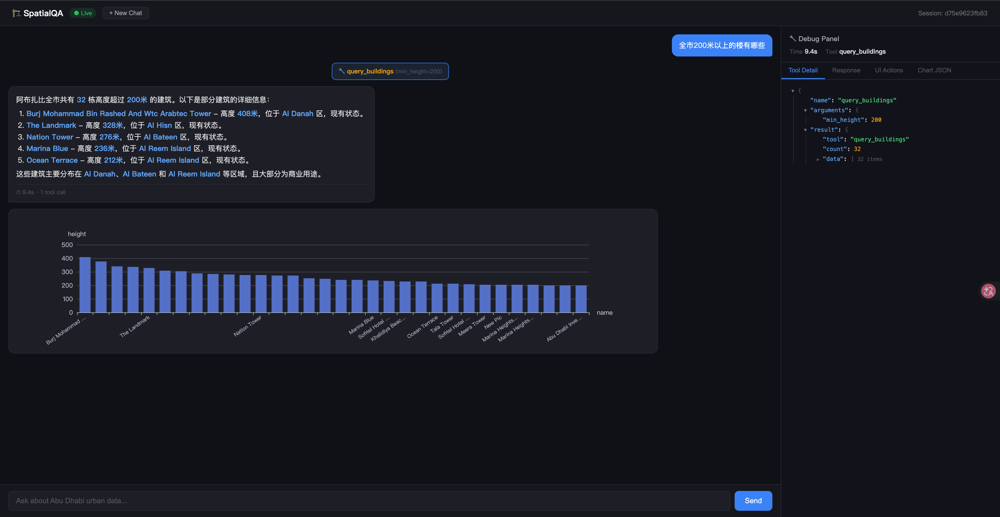

城市级空间数据问答引擎 · 阿布扎比 DMT-POP 项目
Baoli Wang
这场结束后，你能独立完成以下 5 件事
"全市 200 米以上的楼有哪些？"
"大清真寺保护区内违规建筑"
| 阶段 | 能力范围 | 数据源 | 主要挑战 |
|---|---|---|---|
| Demo ← 当前 | 5 场景 · 5 个 MCP 工具 + text_to_sql 兜底 55 表 规划 77 表 + 宜居 64 表 = 142 表 · 1149 万行 · 7.7 GB |
本地 PostGIS 真实数据 |
架构是否正确 工具是否稳定 |
| Phase 1 | 9 场景 · 11 个 MCP 工具 Schema 分层注入 |
飞渡生产 PostGIS | Schema 分层 覆盖率 → 9/13 |
| Phase 2 | 13 场景全覆盖 · 15 个工具 跨源空间查询 |
+ 飞渡生产 SQLServer/SDE（64 张表） |
双源路由 SRID 统一 |
三个现在就必须设计对的地方
datasource.py SQLServer 分支目前是占位逻辑Demo 阶段两类数据都已导入本地 PostGIS（真实数据，非 mock）：
规划类 77 表 · 宜居类 64 表 = 142 表 · 1149 万行 · 7.7 GB
| 表名 | 主要字段 | 数据规模 |
|---|---|---|
udm_building | building_id, height, floors, land_use, geom | 38 万行 |
udm_plot | plot_id, status, area, zone_id, geom | 41 万行 |
bus_stop | stop_id, name, geom | 3.3K 行 |
grand_mosque_overlay | id, geom (polygon) | 保护区边界 |
airport_overlay | id, geom (polygon) | 保护区边界 |
masterplan_boundary | project_id, zone_id, stage, area, geom | 规划分区 |
从飞渡全量到 LLM 理解，逐级收窄
| 层级 | 规划 | 宜居 | 合计 | 覆盖方式 |
|---|---|---|---|---|
| L0 PRD 全量 | ~120 | 64 | 180+ | 飞渡生产 DB（动态） |
| L1 数据库层 | 77 | 64 ✅ | 142 | 本地 PostGIS（静态导入） |
| L2 工具可达 | 26 | 29 | 55 | MCP + text_to_sql 白名单 |
| L3 Schema | 5 | 6 | 11 | YAML 注入 prompt |
关键缺口：L2 白名单 55 表中只有 11 表有 Schema → LLM 对其余 44 表只能猜列名，查询准确度低。Phase 1 需要补齐。
| SN | 主题 | 问题示例 | Demo | Phase 1 | Phase 2 |
|---|---|---|---|---|---|
| 1 | 规划 | 高亮亚斯岛未建地块 | ✅ | ||
| 2 | 规划 | 投资区域开发完成度排名 | ✅ S4 | ✅ | |
| 3 | 规划 | 200米以上的楼 | ✅ S1 | ✅ | |
| 4 | 规划 | T9 楼层/单元/房间 | ✅ | ||
| 5 | 合规 | 大清真寺保护区违规建筑 | ✅ S2 | ✅ | |
| 6 | 合规 | 机场净空区超高建筑 | ✅ | ||
| 7 | 交通 | 距公交站400米外住宅区 | ✅ S3 | ✅ | |
| 8 | 交通 | 机场到市中心可达性 | ✅ | ||
| 9 | 环境 | 洪水高水位线内地块 | ✅ | ||
| 10 | 宜居 | 各社区宜居指标排名 | ✅ | ||
| 11 | 宜居 | 宜居指数同比环比 | ✅ | ||
| 12 | 专项 | 地块用途变更分析 | ✅ | ||
| 13 | 专项 | 商场选址 TOP3 | ✅ |
覆盖率：Demo 4/13 → Phase 1 9/13 → Phase 2 13/13
用户自然语言提问
↓
Agentic Orchestration Engine (FastAPI)
├── Schema 分层注入 (核心表全量 + 主题动态)
├── LLM 推理 → 选工具 + 填参数
│ ├── 路径 A: MCP 工具 (参数化 SQL, 高频)
│ └── 路径 B: Text-to-SQL (长尾兜底)
├── PostGIS / SQLServer 双数据源路由
├── 错误回传重试 (最多 3 次)
└── 多轮对话 (Session + 滑动窗口)
↓
输出层
├── 结构化 JSON
├── ECharts option JSON (20+ 图表类型)
├── GeoJSON + 3D 场景控制指令
└── 自然语言解读
Agent 决定怎么查 · Tool/SQL 决定查什么 · Output 决定怎么给前端消费
server.py — FastAPI 入口agent.py — 推理循环（核心）schema_loader.py — Schema 注入session.py — 多轮上下文datasource.py — 双源路由tools/query_buildings.pytools/overlay_compliance.pytools/spatial_buffer.pytools/rank_areas.pytools/text_to_sql.pyoutput/chart_generator.pyoutput/scene_control.py学习顺序：server → agent → tools → schema/session/output
| # | 问题 | 工具 | 预期输出 |
|---|---|---|---|
| S1 | 全市 200 米以上建筑 | query_buildings | 表格 + 柱状图 + 3D 高亮 |
| S2 | 大清真寺保护区违规建筑 | overlay_compliance | 违规清单 + 3D 红色高亮 |
| S3 | 距公交站 400 米外住宅区 | spatial_buffer | TOP 统计 + GeoJSON |
| S4 | 五大投资区域开发完成度排名 | rank_areas | 排名柱状图 |
| S5 | "刚才那个结果，按区域分组" | 多轮追问 | Session + 聚合结果 |
先跑通五个场景 → 记录每个命中的工具与 SQL → 复盘每一步决策是否符合预期

工具：query_buildings(min_height=200) · 返回 32 栋 · 耗时 9.4s
| # | 场景 | 工具 | 结果 | 耗时 | 瓶颈 |
|---|---|---|---|---|---|
| S1 | 200m+ 建筑 | query_buildings | 32 栋 | 11.9s | LLM API |
| S2 | 保护区违规 | overlay_compliance | 违规清单 | 7.7s | LLM API |
| S3 | 公交站缓冲区 | spatial_buffer | 50 地块 | 31.1s | 空间计算 |
| S4 | 区域排名 | rank_areas | 5 区域 | 6.4s | LLM API |
| S5 | 多轮追问 | text_to_sql | 分组正确 | 7.5s | LLM API |
S1/S2/S4/S5 瓶颈在 LLM API 延迟（~5-7s），本地大模型可优化 | S3 瓶颈在空间计算（3338 站 × 41 万地块 ST_DWithin），Phase 1 可用 materialized view 预计算优化
query_buildings只用工具：覆盖率不够 | 只用 Text-to-SQL：稳定性不够
混合 = 主干稳定 + 尾部覆盖
每次新增场景，先问自己这两个问题
→ 是：做成 MCP 工具，参数化、可测试、可复用
→ 是：走 Text-to-SQL 兜底，不要过早工具化
→ 错误信息回传模型修正，最多重试 3 次，超出后明确失败，不要悄悄错
三条硬规则
1. 注入不是越多越好
2. 目标是"足够决策"，不是百科全书
3. Schema 描述要写：业务含义 + 关键字段 + 常用筛选条件
跨 SRID 查询挂起时间
SRID 统一 + 索引重建后
ST_Transform性能公式：SRID 一致 + GIST 索引 + 查询可走索引 — 三者缺一不可
| 数据集 | SRID | 说明 |
|---|---|---|
| 规划类（pg_dump） | 4326 (WGS84) | 原始数据即 4326 |
| 宜居类（FileGDB） | 32640 (UTM 40N) | FileGDB 导入保留原 SRID |
bus_stop（特殊） |
4326 ← 原 32640 | ALTER TABLE ST_Transform 永久转换 |
⚠️ Phase 2 接入 SQLServer 宜居类时，SRID 不一致是数据本身属性，不是导入问题。
需在 ETL 层一次性转换，而非运行时ST_Transform。
spatialqa/tools/ 下新增模块，参数化 SQL（禁止字符串拼接）| 现象 | 先检查 |
|---|---|
| 模型选错工具 | Schema 描述是否模糊 · 工具命名是否打架 · 触发词是否缺失 |
| 查询变慢 | SRID 是否一致 · GIST/功能索引是否存在 · where 是否破坏索引 |
| 多轮答非所问 | session 截断是否过早 · 上轮摘要是否丢关键字段 |
| 图表不对 | 图表类型 vs 数据类型 · category/value 映射是否反 · 空值处理 |
五个场景先跑通，再问问题